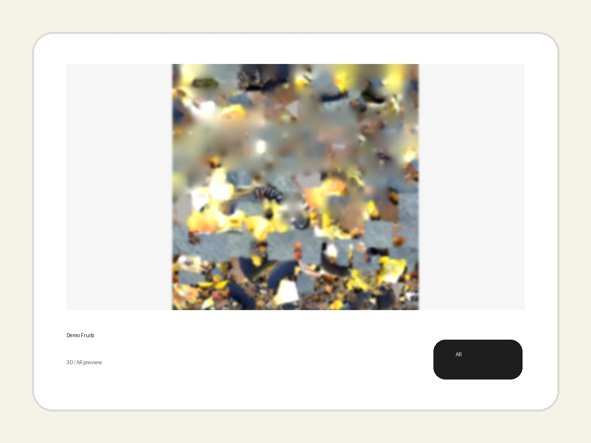

Демонстрационный каталог
Qadam 3D / AR Demo
Посмотрите, как блюда могут выглядеть в цифровом меню и прямо на столе гостя.

Демонстрационный каталог
Посмотрите, как блюда могут выглядеть в цифровом меню и прямо на столе гостя.
